CycleHUD
Eyes on the road. Radar on your wrist.
A clean, radar-first cycling HUD for iPhone and Apple Watch. See vehicles approaching from behind on a glanceable radar lane, feel escalating wrist alerts as they close in, and finish every ride as an Apple Health workout.

What it does
Built around the Coospo TR70 rear radar (and Garmin Varia–compatible radars).
Rear radar lane
Vehicles behind you are plotted by distance on a perspective lane that glows amber → red as a car closes in.
Apple Watch wrist alerts
A tap for each new vehicle, escalating as it nears, and a distinct buzz if the radar drops out — eyes stay on the road.
Reliable presence
Uses the radar's heartbeat to confirm it's really there, and clearly shows NOT CONNECTED the moment it isn't.
Live ride metrics
Speed, average, distance, time, cadence, ascent, gradient, heart rate and calories — long-press to add, remove and rearrange tiles right on the ride screen, even above the radar.
Route planning
Plan loops or A-to-B rides on a map — the path snaps to quiet roads and cycle paths. Follow a saved route on a live street map in the radar panel while the road behind is clear (vehicles take over instantly), with spoken turn alerts, a climb profile of the road ahead, and the junction tile pointing the way. Import GPX routes from Strava, Komoot & co., share your own as files — and race your ghost: your best run of the route rides the map with you, with a live ahead/behind readout. No accounts. Optional, off by default.
Insights & traffic stats
Weekly distance and climbing trends, personal records — and radar statistics no other app has: vehicles detected, detections per km, your fastest overtake, and a map of everywhere vehicles passed you. All computed on your device.
Upcoming junctions
An optional tile shows the next intersection ahead — its layout drawn in your direction of travel and the distance counting down as you approach. Powered by OpenStreetMap road data (off by default; © OpenStreetMap contributors).
iCloud sync
Rides, routes and ghosts back up to your own iCloud Drive and follow you to a new phone — no accounts, no CycleHUD servers. When two devices hold the same route, the faster ghost wins.
Apple Health workout
Each ride is saved as a cycling workout with distance, duration, calories and GPS route — or keep rides local-only with one toggle. On iOS 18+, rate how hard the ride felt (1–10) right on the summary and it's saved as the workout's effort score.
Ride summary & history
A clean summary with route map and graphs — scrub any graph or the map and the same moment is marked on all of them. Reopen any past ride from Settings.
Vehicles on the map
Every vehicle the radar flags is pinned on the ride map, so you can see where traffic came up behind you.
Heart rate, your way
From your Apple Watch or a standard Bluetooth heart-rate strap — with an optional max-HR warning that turns the readout red and buzzes your wrist.
Crash detection & SOS
A violent impact followed by you coming to a stop starts a countdown you can cancel — then a ready-to-send text to your emergency contact with your location. Bumps you ride through are ignored. The alert mirrors to your Apple Watch with repeating wrist buzzes: tap “I’m OK” to cancel both devices, or call your emergency contact straight from the wrist if the phone is out of reach.
Strava, your way
Auto-sync rides to Strava via Apple Health (with a bridge app like HealthFit) — no login in CycleHUD — or share any ride as a GPX/TCX file from the summary.
Weather & wind
A next-hour rain nowcast, the temperature, and the wind shown as headwind or tailwind relative to the way you're heading.
Spoken call-outs
An optional voice announces each vehicle and its distance — ideal with bone-conduction headphones, alongside or instead of the beep.
Manual laps
Tap to split your ride into laps and review each one — time, distance and average speed — in the summary.
Your look, your layout
Light, dark or a neon Cyberpunk theme, retro 7-segment digits, landscape with the radar on either side — and the radar's battery always on the panel.
Private by design
No accounts, no servers, no tracking. Your ride data stays on your device and in Apple Health.
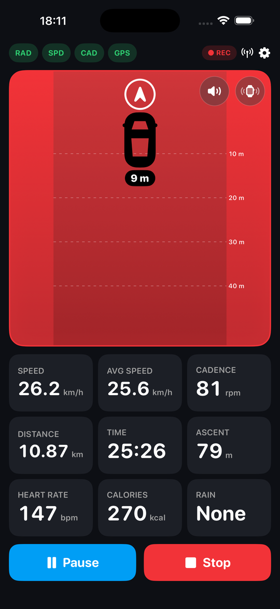
Made for the ride
A radar-first screen with the data that matters, and nothing that doesn't.
The whole panel floods with colour and your wrist taps faster as a vehicle approaches, so you always know what's behind you without looking down. Speed comes from your wheel sensor or GPS, elevation from the barometer, and heart rate from your Apple Watch or a Bluetooth strap.
Screenshots
Low, medium and high threat; clear and dark mode; ride summary, graphs and your wrist.
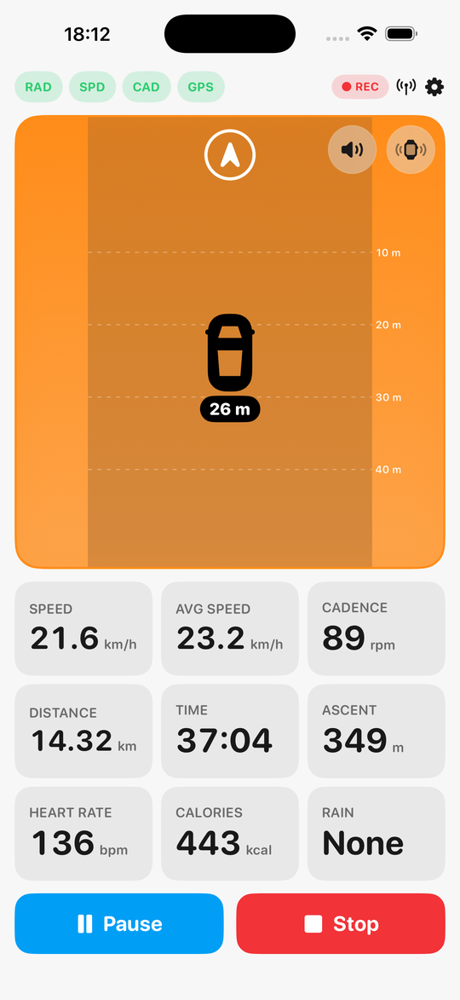
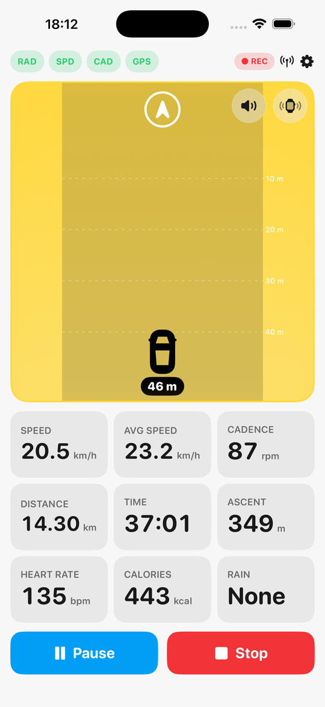
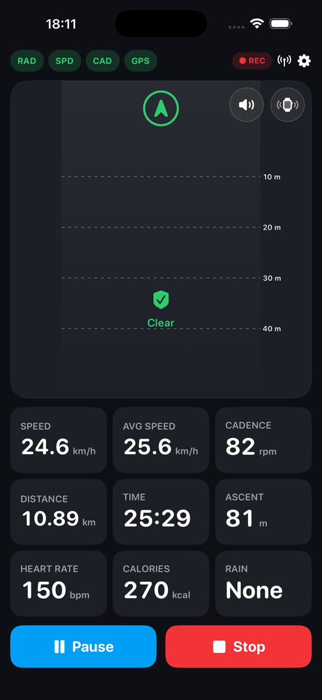
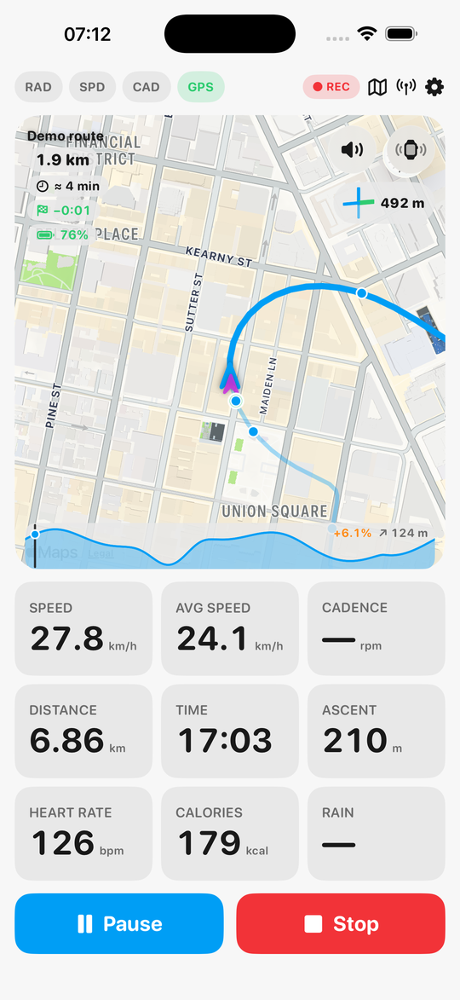
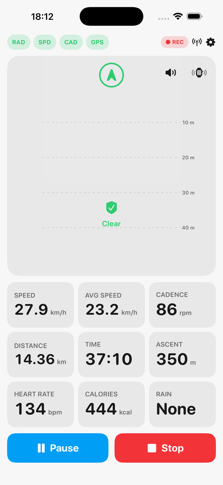
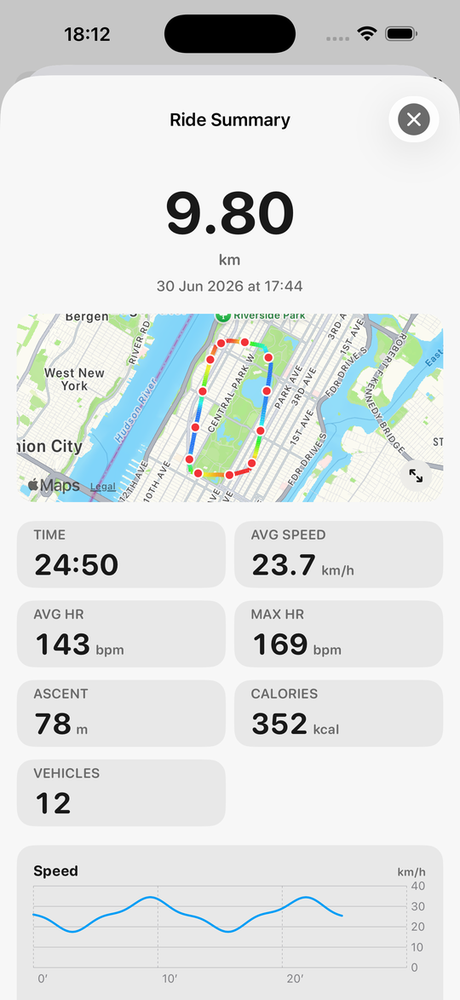
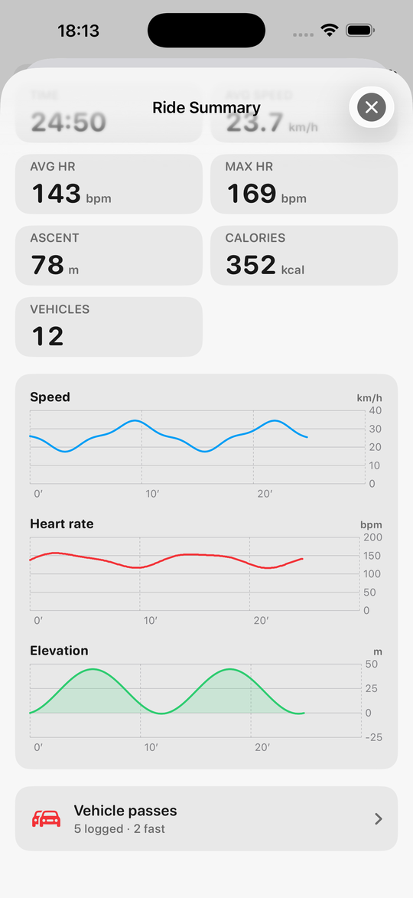
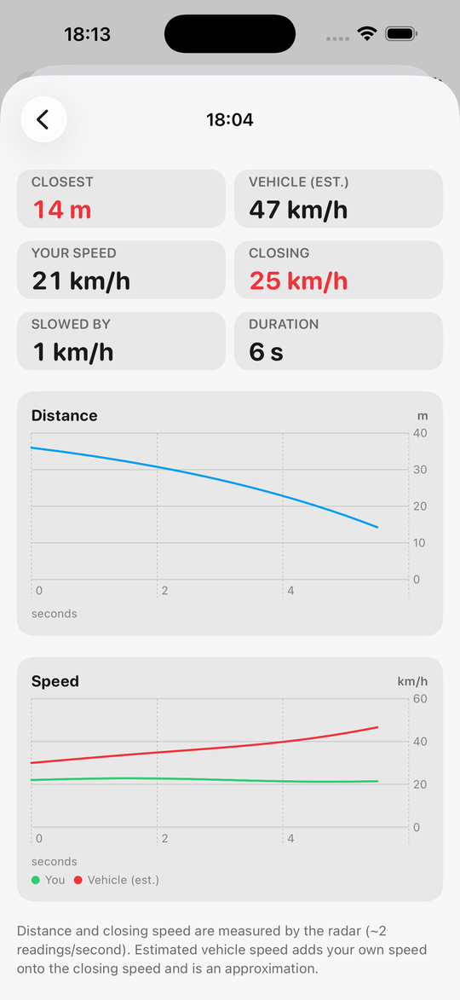
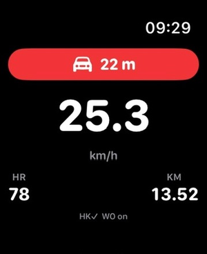
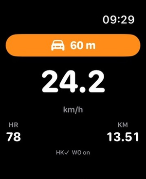
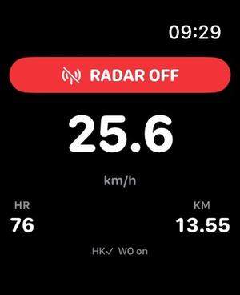
Getting rides into Strava
No Strava login in CycleHUD — by design.
Connecting to Strava's API would mean accounts, tokens and a server — breaking CycleHUD's no-logins, no-servers privacy promise. Instead, every ride is saved to Apple Health as a full cycling workout (distance, calories, GPS route). A Health→Strava bridge app such as HealthFit or RunGap can auto-upload each new workout to Strava moments after you tap Stop — the Strava login lives there, never in CycleHUD. Prefer manual? Share any ride as a GPX or TCX file from its summary.
Privacy
CycleHUD is built to keep your data on your device.
CycleHUD has no accounts and no servers. It does not collect, transmit, sell, or share your personal data, and contains no analytics, advertising or tracking. Location, motion, Bluetooth-sensor and heart-rate data are used only on your device to power the ride display and to save your workout to Apple Health, which you control.